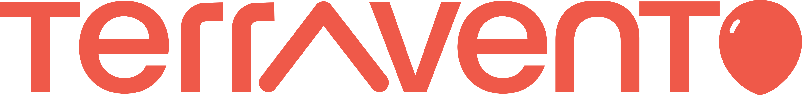
Diseño visual y experiencia de usuario para el lanzamiento de una marca de rastreo vehicular digital
Branding

Terravento nace con la misión de facilitar la búsqueda y renta de terrazas para eventos sociales,
como cumpleaños o reuniones familiares. Funciona como una web tipo Airbnb, donde los usuarios pueden
buscar y reservar terrazas disponibles, o bien, publicar las suyas para obtener ingresos.
La necesidad surgió al detectar que no existía una plataforma centralizada para este fin, y que el proceso actual era lento, informal y poco confiable.
La necesidad surgió al detectar que no existía una plataforma centralizada para este fin, y que el proceso actual era lento, informal y poco confiable.
¿Cuál era el problema?
A menudo, personas de entre 25 y 40 años necesitaban encontrar una
terraza de forma rápida para celebrar un evento. El proceso actual (grupos de
Facebook, mensajes informales, búsquedas en múltiples sitios) era ineficiente.
Además, muchas personas con terrazas disponibles no sabían cómo promoverlas más allá
del boca a boca.
Investigación
Primera versión:
- Investigación secundaria: análisis de Airbnb y apps similares.
- Feedback directo de anfitriones con experiencia en renta de espacios.
- Feedback de anfitriones reales que rentaban sus terrazas.
- Encuestas con usuarios activos de la plataforma.
- Se identificó la necesidad de un panel administrativo con calendario y gestión de pagos.
Perfil del usuario principal
Padre de 35 a 40 años, con un niño pequeño, ocupado en el trabajo, sin tiempo de investigar opciones. Busca una terraza funcional, fácil de reservar desde la oficina, y sin procesos complicados.
Flujos y experiencia del usuario
Se mapearon dos flujos clave:
- Cómo subir una terraza:
Desde la creación del perfil hasta la publicación y administración del calendario. - Cómo reservar una terraza:
Búsqueda, selección, confirmación de fecha, pago y contacto con el anfitrión.
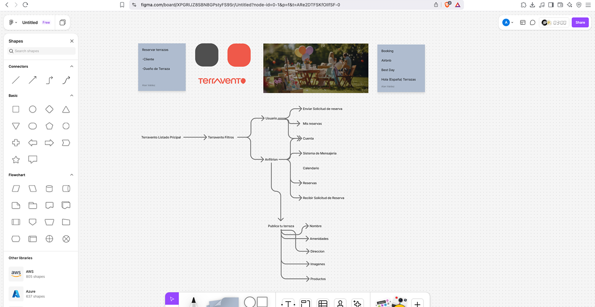
Identidad visual
El branding se desarrolló completamente:
- Logo: Representa una terraza y un globo de fiesta y el carácter informal del proyecto.
- Colores: Paleta amigable, moderna pero no lujosa.
- Tipografía: Poppins – legible, contemporánea y accesible.
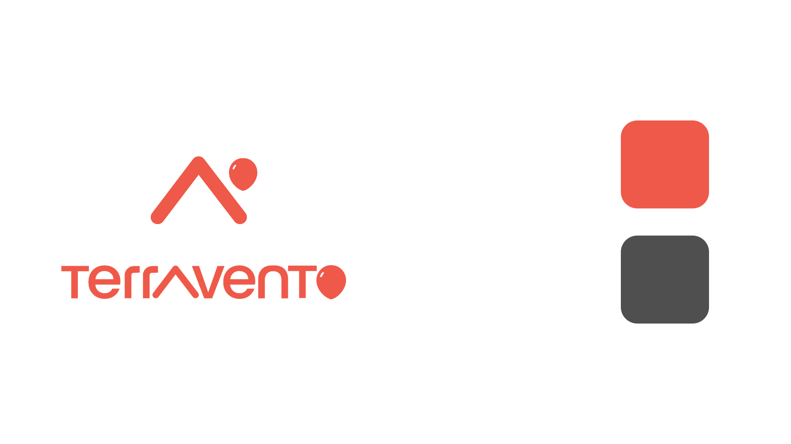
Prototipos y evolución
- La primera versión era más elegante, pero resultó poco alineada con el público objetivo.
- El rediseño enfocó la experiencia en la funcionalidad, rapidez y claridad.
- Se prototiparon ambas versiones en Figma.
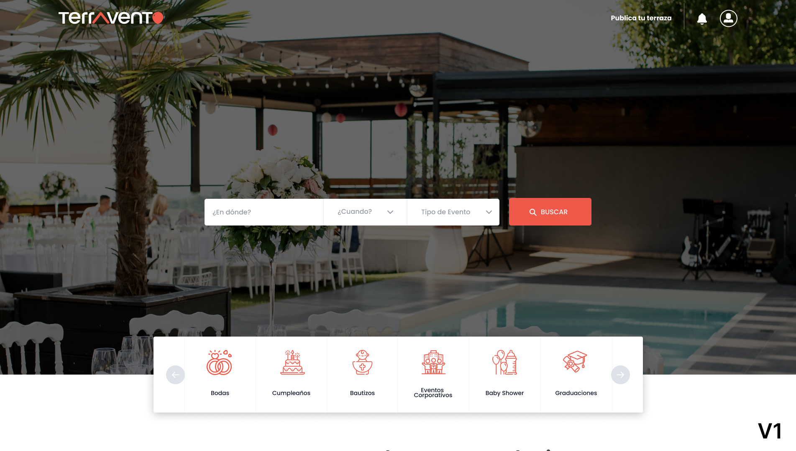
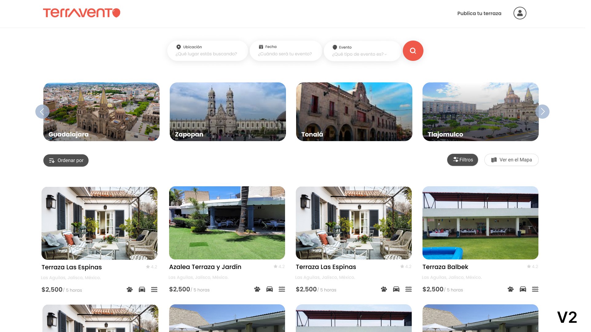
Panel para anfitriones
Uno de los mayores aprendizajes fue la necesidad de empoderar a los dueños de terrazas con herramientas:
- Calendario de reservas
- Panel con estadísticas
- Posibilidad de elegir entre distintos planes de pago
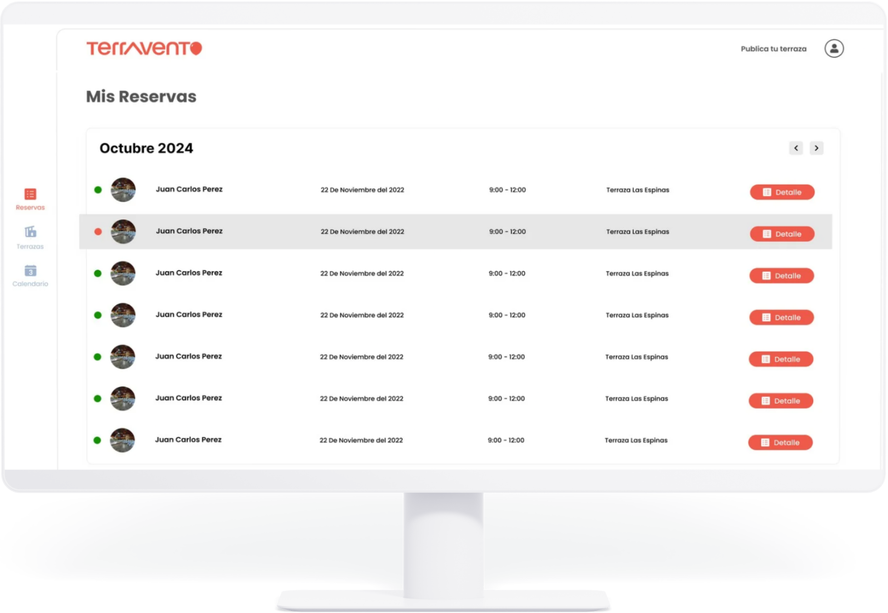
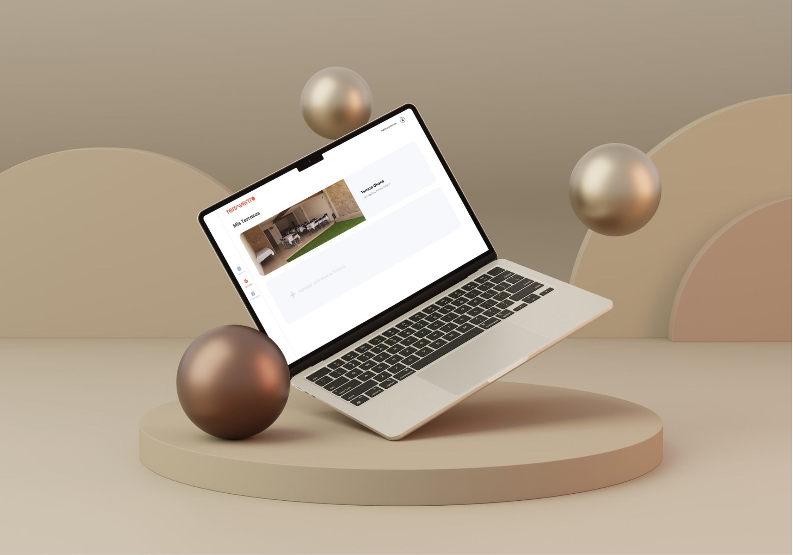
Resultados
- El proyecto fue lanzado y está en funcionamiento.
- Ha obtenido tráfico orgánico sin inversión en publicidad.
- El crecimiento y la demanda han validado la propuesta.
- Actualmente se está evaluando el desarrollo de la app móvil (ya prototipada).
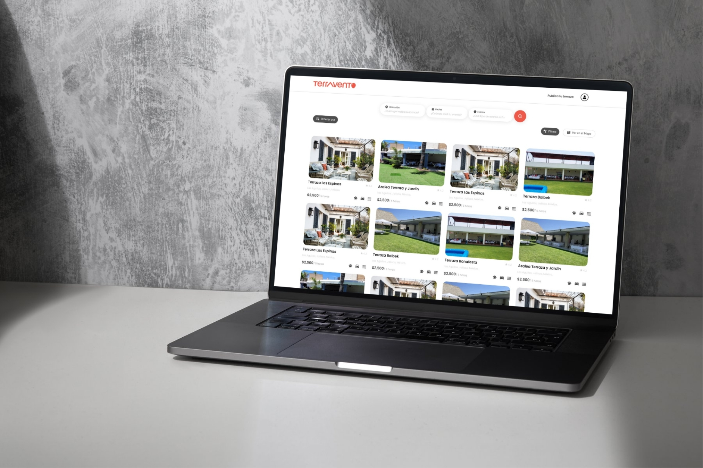
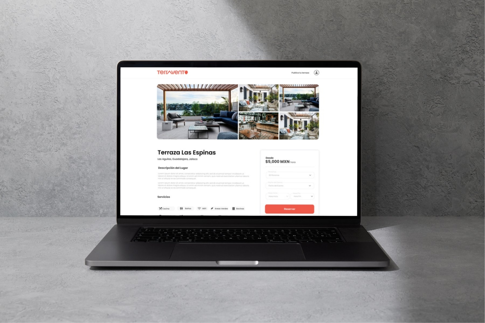
Próximos pasos
- Integrar la app móvil.
- Explorar modelos de suscripción para anfitriones.
- Mejorar la segmentación en el buscador de terrazas.
- Incluir pagos desde la plataforma.
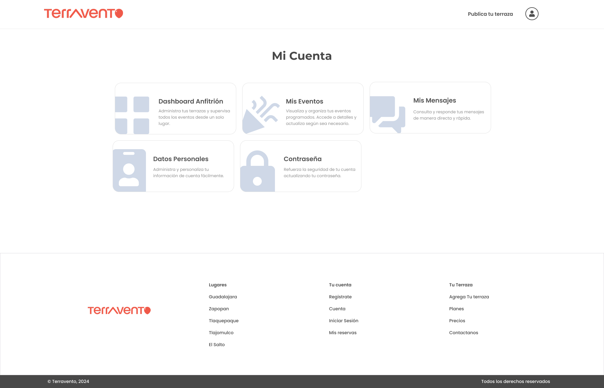
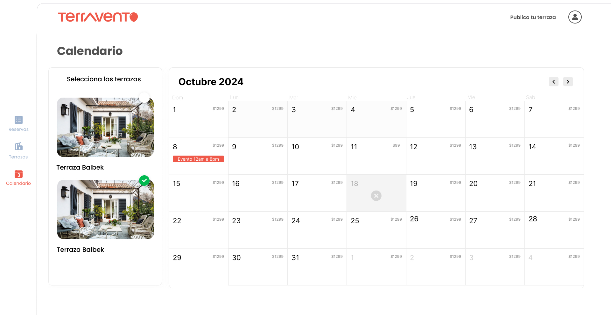
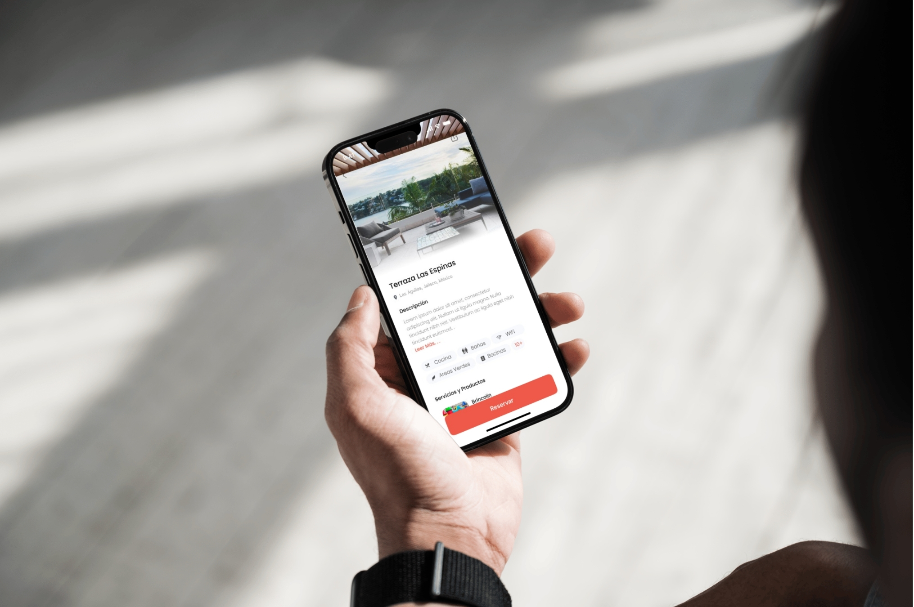